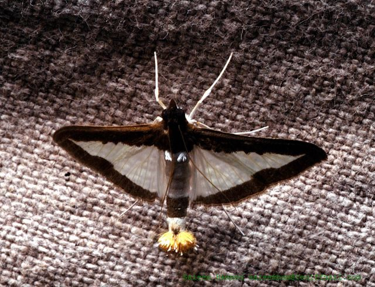

कुकंबर मॉथ पतंगाCucumber Moth
Diaphania indica · Crambidae · INS-0154

- Scientific name वैज्ञानिक नाम
- Diaphania indica (Saunders, 1851)
- Family कुल
- Crambidae
- Hindi हिंदी
- कुकंबर मॉथ पतंगा
- Local names स्थानीय नाम
- cucumber moth, moth
- Status here यहाँ की स्थिति
- native
- Movement आवागमन
- Resident, here all year
- Known from कहाँ दर्ज
- Others have published records from the wider Awadh–Purvanchal plain, none yet from Basti–Ayodhya अवध–पूर्वांचल से दूसरों के प्रकाशित अभिलेख, बस्ती–अयोध्या से अभी नहीं
- IUCN IUCN
- not evaluated
- Review समीक्षा
- audited and independently read
When to look कब देखें
Present all year. साल भर मौजूद।
Uses and possibilities उपयोग और संभावनाएँ
Drawn from the documented uses in the profile below, where each is labelled traditional, current or a research lead. All uses →
Tell it apart from इनसे अलग पहचानें
कुकंबर मॉथ पतंगा / Cucumber Moth
Diaphania indica (Saunders, 1851) — Crambidae
कुकंबर मॉथ पतंगा — यह एक छोटी, सुंदर रात की पतंगा है जो ककड़ी, खरबूजे, और दूसरे तरबूज़ की पत्तियों और फलों में सुरंग बनाती है। पतंगा सफ़ेद या हल्के पीले रंग के पंखों वाली होती है, जिन पर काले या भूरे धब्बे बने होते हैं। इसकी काली पतली पंखों की नोकें होती हैं। कैटरपिलर का रंग हल्का हरा होता है और यह फलों और पत्तियों दोनों को खाता है। गर्मी के मौसम में इसके कई पीढ़ी एक साथ होती हैं। सब्ज़ियों के बागों और खेतों में एक जाना-माना कीट है।
Quick Identification त्वरित पहचान
| Feature | Description |
|---|---|
| Size | Small moth; wingspan 22–28 mm |
| Colour | White to pale yellow base; with black or brown markings |
| Wings | Forewings with black or dark brown spots and bands; hindwings white or pale |
| Pattern | Distinctive black-tipped wings; clear markings on white ground |
| Larva | Pale green to greenish-yellow; found within fruits and leaves |
Field tip: A small white or pale yellow moth with distinctive dark markings and black-tipped wings, found in the vicinity of cucumber, melon, and gourd crops. Look for silken webbing and entry holes in fruits.
हिंदी — कैसे पहचानें: सफ़ेद पतंगा, काले-भूरे धब्बों के साथ। पंख की नोकें काली। ककड़ी के खेतों में पाई जाती है।
Morphology आकारिकी
Biometrics (typical measurements):
| Measurement | Range |
|---|---|
| Wingspan | 22–28 mm |
| Body length | 9–11 mm |
| Forewing length | 10–12 mm |
Adult description: A small crambid moth with a white to pale yellow ground colour. The forewings have distinctive black or dark brown spots and bands, particularly at the apex (tip) which is characteristically black-tipped. The hindwings are plain white or pale. The head and thorax are white with fine markings. Antennae are filiform.
Larval Stage
Caterpillar: Pale green to greenish-yellow, smooth-bodied, reaching 9–12 mm in length. The larva feeds within fruits and leaves, often creating silk-lined tunnels. It may be solitary or in small groups within the fruit. The caterpillar's presence is indicated by entry holes, silken webbing, and frass (droppings) inside the fruit.
Life Cycle / Phenology जीवन चक्र
| Stage / Month | Event |
|---|---|
| Egg | Laid on host plant fruits or leaves; hatches in 3–4 days |
| Larva (instar 1–4) | 2–3 weeks on host; bores into fruits or leaves |
| Prepupa | 1–2 days; larva leaves fruit or plant |
| Pupa | Within silken cocoon in soil or debris; 5–7 days in warm weather |
| Adult | Emerges; lifespan 2–3 weeks; multiple generations per year |
| Warm season | Continuous generations from April to November |
हिंदी: गर्मी में कई पीढ़ियाँ। कैटरपिलर ककड़ी के फल में घुस जाता है, 2–3 हफ़्तों में प्यूपा बन जाता है।
Host Plants or Prey आहार
Larval hosts:
- Cucumber (Cucumis sativus)
- Melon and muskmelon (Cucumis melo)
- Watermelon (Citrullus lanatus)
- Gourd species (Lagenaria, Luffa)
- Pumpkin and squash (Cucurbita spp.)
- Wild and weedy Cucurbitaceae
Food preference: Prefers young fruits and growing points; also feeds on leaves and petioles.
Predators / Natural Enemies शत्रु
- Parasitoid wasps: Small wasps parasitize eggs, larvae, and pupae.
- Parasitoid flies: Tachinid flies parasitize larvae.
- Ground beetles: Predatory beetles feed on pupae in soil.
- Spiders: Hunt adults and larvae.
- Insectivorous birds: Feed on adults and larvae.
- Entomopathogenic fungi: Beauveria and Metarhizium species.
Agricultural / Human Relevance कृषि प्रासंगिकता
Pest status. The Cucumber Moth is a moderate pest of cucumber and related crops in eastern Uttar Pradesh. Larval damage consists of entry holes and tunneling within fruits, making them unmarketable. Leaf damage is usually minor. Economic significance depends on crop value and market standards for fruit quality.
Today. Common in all cucumber and melon-growing regions. Populations are managed through cultural practices and, in high-value crops, chemical control. Biological control through parasitoid wasps is under investigation.
Research direction (a lead, not a result). Seasonal phenology and population dynamics of Diaphania indica in eastern UP; host-plant resistance in cucumber and melon varieties; natural enemy complex and potential for conservation biological control; pheromone biology and attractants for monitoring.
हिंदी: सब्ज़ियों के बागों में आम कीट है। ककड़ी के फलों को खराब करता है।
Expected Locally स्थानीय रूप से अपेक्षित
Not a field record. Written from published accounts for eastern Uttar Pradesh. No confirmed local sighting yet — if you have seen it, that is what the atlas needs.
अभी तक स्थानीय पुष्टि नहीं। यह विवरण प्रकाशित स्रोतों से है, किसी अवलोकन से नहीं।
Expected on cucumber, melon, and gourd crops throughout Basti district and eastern Uttar Pradesh during the growing season (April–November). The moth is most abundant during warm months when multiple generations overlap. Damage is visible as entry holes in young fruits with silken webbing and frass visible inside. The first local record would be a photograph of the moth or larva inside a fruit with place and date.
Distribution वितरण
Global range: Widely distributed across tropical Asia, from India through Southeast Asia to Japan and the Pacific Islands.
In India: Common throughout the country wherever cucumber and related crops are grown.
In Uttar Pradesh: Present in all vegetable-growing districts, particularly in areas with cucumber and melon cultivation.
In Basti district / eastern UP: Expected in all vegetable gardens and cucumber-growing fields.
Research Questions शोध प्रश्न
Anyone can investigate these | कोई भी इन प्रश्नों की जाँच कर सकता है
- How many larval generations occur during a single cucumber-growing season in eastern UP? / एक मौसम में कितनी पीढ़ियाँ आती हैं? — Grow cucumbers from seed; monitor larvae monthly.
- Which host plants (cucumber, melon, gourd) suffer the highest moth damage? — Compare damage levels across different Cucurbitaceae species.
- What is the sex ratio and lifespan of adults in laboratory conditions? — Rear moths indoors; record development times and sex ratio.
- How do parasitoid wasps suppress Diaphania indica in field conditions? — Collect pupae; rear; record parasitoid emergence.
- Can pheromone traps be used to monitor moth populations in cucumber fields? / क्या कीटों को पकड़ने के जाल लगा सकते हैं? — Test different pheromones; record catch rates.
Similar Species मिलती-जुलती प्रजातियाँ
| Species | How to tell apart | हिंदी | |
|---|---|---|---|
| [[beet_webworm\ | Beet Webworm]] (Spoladea recurvalis) | Smaller; paler colouration; more delicate wing pattern; different host plants | चुकंदर पतंगा — पीली, पतली निशानियाँ |
Field rule: A small white or pale yellow moth with black-tipped wings and dark markings, found on cucumber, melon, or gourd plants, is the Cucumber Moth.
Taxonomy & Classification वर्गीकरण
Original description. Described by Saunders in 1851 from specimens collected in India. Type locality is India. The genus Diaphania was established by Hübner; the specific epithet indica refers to India.
Subspecies. Monotypic — no subspecies are currently recognised, though geographic variation occurs across the wide Asian distribution.
Family and order placement. Order Lepidoptera, family Crambidae. Diaphania is a diverse genus of phytophagous crambids, many of which are significant agricultural pests.
Phylogenetic notes. Diaphania indica is phylogenetically close to Diaphania pulveralis and Diaphania nitidalis (the Asian corn borer), sharing a common ancestor within the Spilomelinae subfamily.
IUCN status rationale. Not formally assessed. Abundant and widely distributed; no conservation concerns.
Photo Gallery फोटो गैलरी
No photos yet — add field photos to media/species/cucumber_moth/ and run node scripts/sync_photos.js.
Wanted:
- Adult moth at rest
- Larva inside cucumber fruit
- Damaged cucumber with entry hole
- Adult in flight or at flowers
References संदर्भ
- Saunders, W.W. (1851). Descriptions of new insects from the East Indies. Annals and Magazine of Natural History, Series 1, 7: 53–60. [original description]
- Nayar, K.K., Ananthakrishnan, T.N. & David, B.V. (1989). General and Applied Entomology. 2nd edition. McGraw-Hill, New Delhi.
- Rao, V.P. et al. (1971). A review of the biological control of agricultural pests in the Indian region. ICAR, New Delhi.
- Kumar, V. & Rao, A. (2015). Insect pests of vegetable crops and their management. Indian Journal of Horticulture, 72(4): 511–520.
- Capinera, J.L. (2001). Handbook of vegetable pests. Academic Press, San Diego.
- GBIF Occurrence Data — Diaphania indica, Asia (2010–2025). GBIF taxon key: 1313600.
Source file: species/fauna/insects/cucumber_moth.md